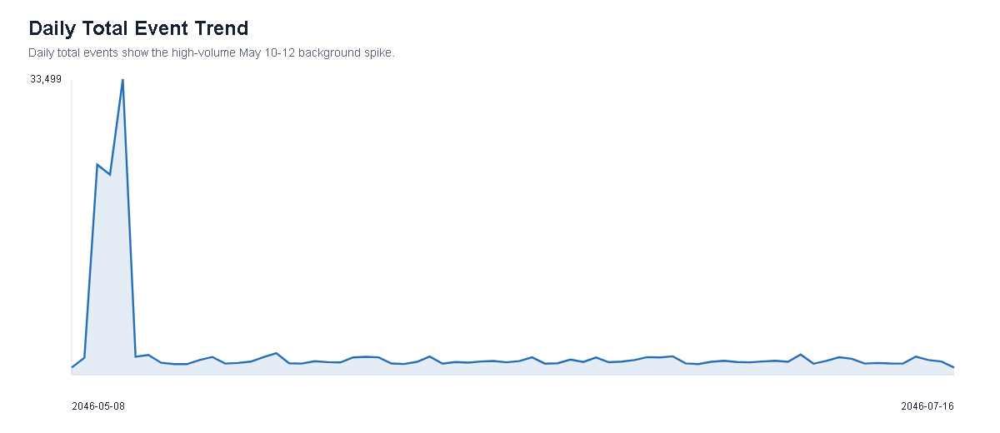

36 PNG figures generated from mc2_viz_data.json. These emphasize descriptive statistics and EDA-style visual encodings.
Overview/Baseline
01_overview_event_type_rank_bar.png - Event Type Rank Bar02_overview_party_type_bar.png - Actor Type Composition03_overview_daily_total_area.png - Daily Total Event Trend

04_overview_hourly_volume_histogram.png - Hourly Event Volume Distribution05_overview_day_hour_heatmap.png - Day-Hour Event Heatmap06_overview_saidit_source_stacked.png - SaidIt Source-Field Composition07_overview_saidit_actor_rank.png - SaidIt Post Count by Actor